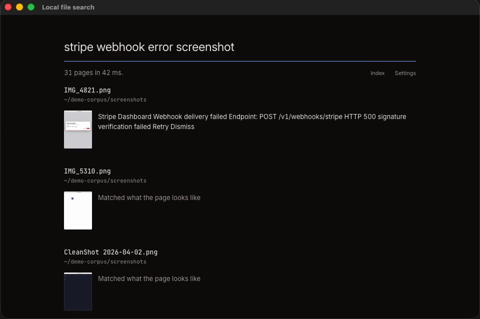

Search your files by what they look like.
Type what you remember seeing. It finds the PDF page or the screenshot, even when those words are not written on it.

What it does
It turns every PDF page, screenshot, image and note into a picture, and a vision model reads the pictures.
That is why a chart with no caption is findable. The words on the page help, but they are not the whole story.
Results appear while you type. Open a page and it highlights the parts that matched your words. Ask a question and the answer links to the pages it used.
Your files
Nothing about them leaves the Mac.
The index, the page pictures and the embeddings all live in one folder on your disk. The app downloads its model once, 4.43 GB from Hugging Face, and searching never needs the internet again.
Answering questions is the one part that can call out, and only to the provider you pick. Run Ollama instead and even that stays here. No analytics, no crash reporting.
Speed
- Search
- 28 to 44 ms
- A new file is searchable in
- 2 s
- Index for 218 pages
- 21 MB
M1 Max, 64 GB, macOS 26.5.1, 2026-09-10. Every number came from a real run.
Honestly
It is good at some queries and bad at others, and the split is worth knowing.
Over 30 test queries it finds 21 out of 21 pages that share a word with what you typed, and 4 out of 9 pages that share none. That second case is the whole reason the app exists, so it is the part still being worked on.
Install
- Download the DMG and drag the app into Applications.
- Run this once, because the app is not signed with an Apple Developer ID.
xattr -dr com.apple.quarantine "/Applications/Local file search.app"
Open it, add a folder, and the first search downloads the model. That takes a few minutes, once.